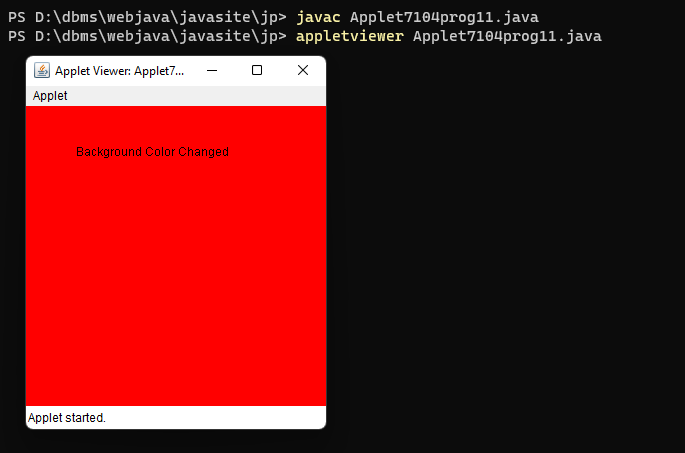
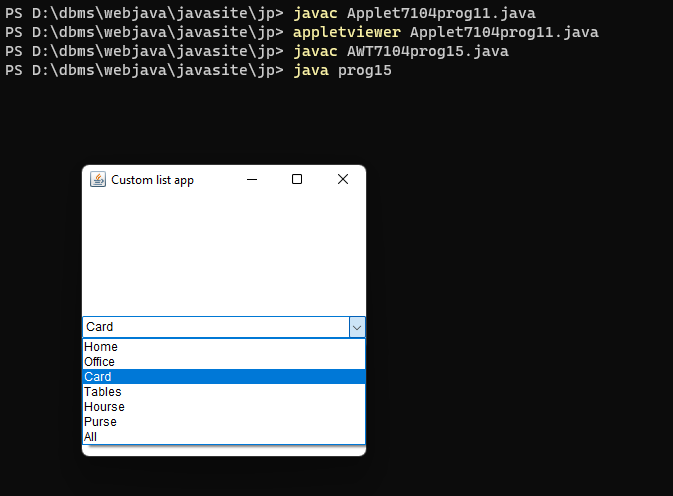
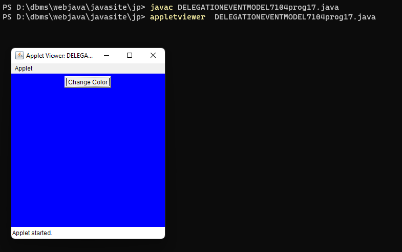
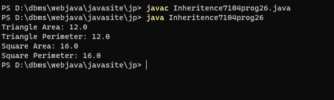
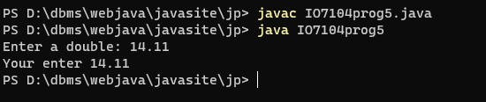
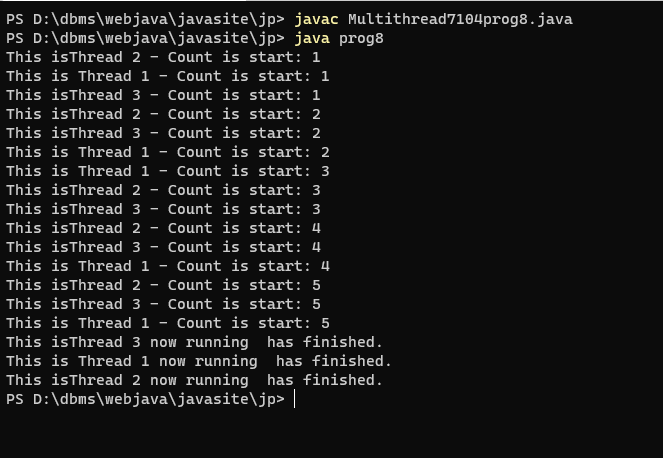
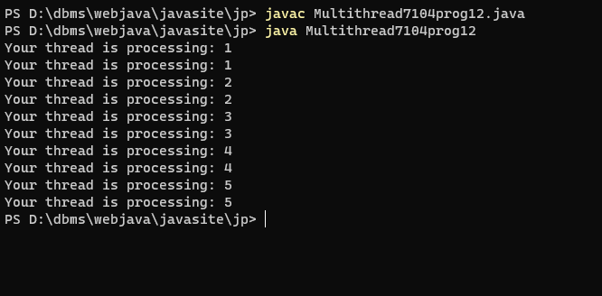
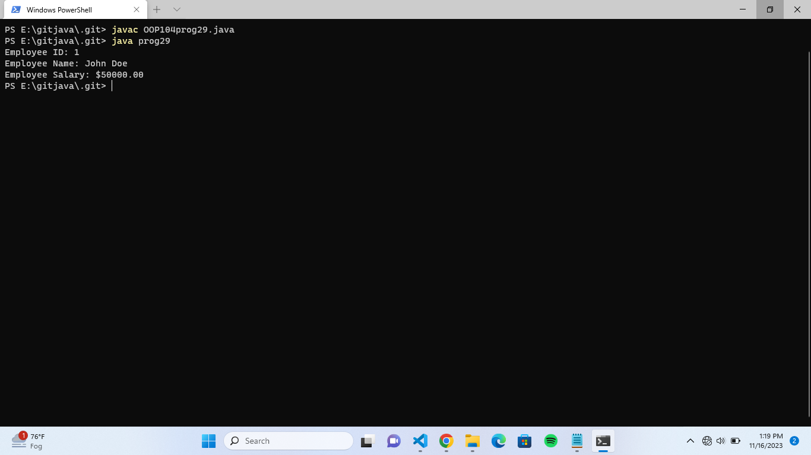

prog 1 Topic = Applet
prog.no 11 Java Program to change background color in applet.
output

prog 2 Topic= Graphical user interface AWT
prog.no 15.Create a simple AWT application that displays a List with Custom
Layout.
output

prog 3
Topic = DELEGATION EVENT MODEL
prog.no 17 Java Program to Change the Applet Background Colour when Button Clicked
output

prog 4 Topic = Inheritence
prog.no 26.write a programme to create an abstract class GeomatricShape with abstract method
area() and perimeter(). create subclass Triangle and Square that extends the GeomatricShape class and implement the respective methode to calculate area and perimeter of each shape.
output

prog.no 5 Topic = Multithread
prog.no 8 Create the program to create multiple threads by using Runnbale
interface
output

prog 6 Topic :Multithreds
prog.no 12. Create the program to create multiple threads, show an example of notify, notifyall, wait, resume, sleep methods.
output

prog 7
Topic = OOP
prog.no 4. Write a Java program to create a class called "Circle" with a
radius attribute.
You can access and modify this attribute. Calculate the area and
circumference of the circle
output

prog 8 Topic = Object oriented programme
29. Write a Java program to create a class called Employee with
private instance variables employee_id, employee_name, and
employee_salary. Provide public getter and setter methods to
access and modify the id and name variables, but provide a getter
method for the salary variable that returns a formatted string.
output

prog 9
Input and Output:
prog.no 5 write a java programme to enter the double value enter by user.